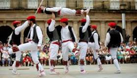

| traditional dance of bilbao
traditional daance of bilbao also known as Aurresku comes from the soka-dantza or rope dance where it takes its name from the first dancer (literally, “Aurresku” means first hand). In recent decades the Aurresku has been danced separately to show respect and welcome, both at public occasions and at important private events such as weddings or homages. |
 click the link to see the wonderful tratitional dance of bilbao https://youtu.be/6HVYX8FRSGA |
|
traditional music of bilbao traditional music of bilbao is the bilbainadas they are considered a musical genre in itself from the twenties. |
click to listen to the traditional music of bilbao https://youtu.be/5sQmU0WZyHQ |